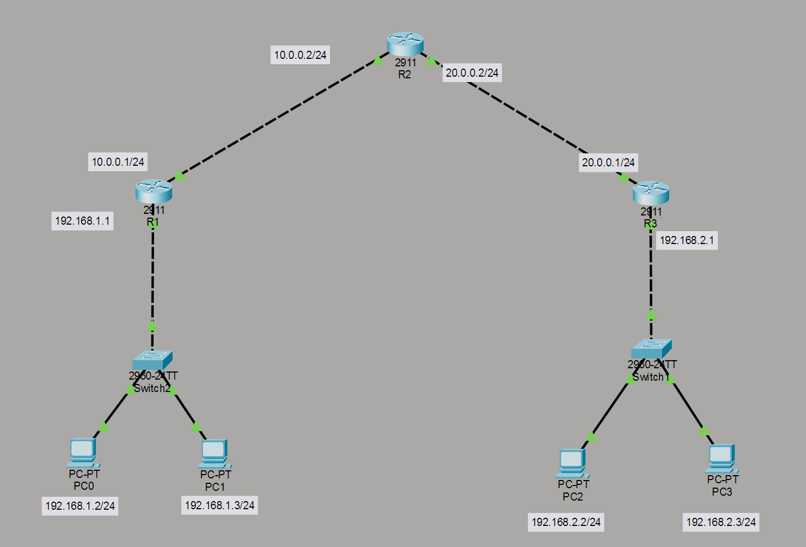

ROAS & Switching Guide
Guida tecnica di riferimento rapido per la configurazione di dispositivi di rete Cisco.
Comandi di Verifica (Show Commands)
| Comando | Descrizione |
|---|---|
|
|
| Nessun comando trovato. | |
Base & Accesso
-
- Nessun accesso trovato.
Guida Configurazione VLAN (CISCO)
Configurazione Switch (VLAN & Access)
Creazione della VLAN e assegnazione ad una porta in modalità access.
Switch(config)# vlan 10
Switch(config-vlan)# VLAN10 (nameIT_Department)
! Assegna la VLAN 10 alla porta fa0/1
Switch(config)# interface fa0/1
Switch(config-if)# switchport mode access
Switch(config-if)# switchport access vlan 10Configurazione Trunk Switch
Configurazione dell'interfaccia verso il router o altri switch in modalità Trunk.
switchport mode trunk
! Su questa porta trunk possono passare SOLO le VLAN 10 e 20
switchport trunk allowed vlan 10,20
perchè? - fai passare solo VLAN necessarie (controllo) , eviti traffico inutile (sicurezza), meno broadcast (performance)
! Aggiungere VLAN senza cancellare le precedenti
switchport trunk allowed vlan add 30
! Rimuovere una VLAN
switchport trunk allowed vlan remove 20
! Rimuovere tutte le VLAN
switchport trunk allowed vlan none
! Permettere tutte le VLAN
switchport trunk allowed vlan allNota Importante: Quando ci sono più switch nel router on a stick,devi mettere sempre le porte che collegano i vari switch fra loro in trunk e quando ci sarà la ridondanza con tanti switch su cui passano i pacchetti devi creare su tutti gli switch le varie vlan (anche se non colleghi nessuna porta delle vlan interessate su quello switch) altrimenti scarterebbe i pacchetti che gli arrivano di quelle vlan se non le crei sopra ognuno di loro.
Verifica Configurazione
Verifichiamo le configurazioni delle VLAN.
Switch# show vlan brief
Switch# show interfaces fa0/1 switchportConfigurazione Router (Subinterfaces)
Attivazione dell'interfaccia fisica e configurazione delle sotto-interfacce con incapsulamento 802.1Q.
! Attiva l'interfaccia fisica
interface GigabitEthernet0/0
no shutdown ! accende la porta
exit
! Attiva l'interfaccia virtuale
Router(config)# interface gig0/1.10 ! sarebbe la porta del router + l'id delle vlan
Router(config-if)# encapsulation dot1Q 10 ! dice al router di incapsulare il traffico con il tag 10
Router(config-if)# ip address 192.168.0.1 255.255.255.240 ! assegna l'indirizzo ip alla sub-interfaccia
Router(config-if)# no shutdown ! accende la portaVerifica Configurazione sul Router
Verifichiamo le configurazioni del router.
Router# show ip interface briefCome collegare due Router on a Stick
Per far collegare due Router on a Stick
Assegnare gli ip + maschera (essendo due puoi mettere /30) alle porte dei 2 router che si collegheranno fra di loro.
Impostare la Default Route sul Router
Quando dietro il secondo router ci sono tutte le reti che il router 1 non conosce, possiamo mettere un comando di "default" che in pratica fa capire al router che tutte le reti che non trova sul router 1, stanno dietro il router 2 (così evitiamo di dover mettere ogni singola route per ogni rete vlan che abbiamo).
ip route 0.0.0.0 0.0.0.0 [indirizzo del prossimo router/multy. l. switch che c'è collegato]In caso di rete in sequenza di blocchi
! Sintassi generica: ip route [IP DESTINAZIONE] [SUBNET_MASK] [IP PORTA ROUTER 2]
Router1> enable
Router1# configure terminal
Router1(config)# ip route 192.168.1.0 255.255.255.0 10.0.0.1
Router1(config)# ip route 192.168.2.0 255.255.255.0 10.0.0.1
Router1(config)# ip route 192.168.3.0 255.255.255.0 10.0.0.1
Router1(config)# exitSuggerimento: se si vuole fare le route in modo più efficace e veloce (senza dover complicare la vita facendo subnetting al millimetro) basta dividere la rete e mettere la maschera /24 (255.0) così che copre tutti gli indirizzi di una rete da 0 a 255.
Configurazione OSPF

Router di Sinistra (R1)
Dobbiamo dire a questo router di annunciare la sua rete locale (i PC) e la rete di collegamento con il centro.
Router(config)# router ospf 1
Router(config-router)# network 192.168.1.0 0.0.0.255 area 0
Router(config-router)# network 10.0.0.0 0.0.0.255 area 0Router Centrale
Questo router deve annunciare entrambe le reti "punto-punto" che lo collegano agli altri due router.
Router(config)# router ospf 1
Router(config-router)# network 10.0.0.0 0.0.0.255 area 0
Router(config-router)# network 20.0.0.0 0.0.0.255 area 0Router di Destra (R3)
Annuncia la sua rete locale e il collegamento verso il centro.
Router(config)# router ospf 1
Router(config-router)# network 192.168.2.0 0.0.0.255 area 0
Router(config-router)# network 20.0.0.0 0.0.0.255 area 0Spiegazione dei parametri
- router ospf 1: Il numero "1" è l'ID del processo. Deve essere lo stesso su tutti i router per semplicità, ma tecnicamente potrebbe anche variare.
- network [indirizzo] [wildcard_mask]: OSPF non usa la maschera di sottorete classica, ma la Wildcard Mask (l'inverso della subnet mask). Per una /24 (255.255.255.0), la wildcard è 0.0.0.255.
- area 0: OSPF organizza i router in aree. L'area 0 è la "Backbone" (colonna vertebrale) ed è obbligatoria.
Come capire se funziona?
Dopo aver inserito i comandi, aspetta qualche secondo. Dovresti vedere dei messaggi in console che dicono:
%OSPF-5-ADJCHG: Process 1, Nbr ... on GigabitEthernet0/x from LOADING to FULL, Loading DoneQuesto significa che i router sono diventati "vicini" (neighbors) e si sono scambiati le tabelle.
Comandi utili per il debug
show ip ospf neighbor
Ti mostra se i router si vedono tra loro.
show ip route
Vedrai le rotte imparate tramite OSPF contrassegnate con una O.
Subnetting VLSM & DHCP
Scenario VLSM: Ti è stato assegnato
l'indirizzo di rete 192.168.10.0 /24. Devi
creare tre sottoreti per i seguenti dipartimenti:
- Vendite: 100 host
- Tecnico: 50 host
- Amministrazione: 20 host
Calcolo delle Sottoreti (VLSM)
Per ottimizzare lo spazio, useremo il VLSM (Variable Length Subnet Mask):
| Dipartimento | Host necessari | CIDR | Subnet Mask | Indirizzo di Rete | Range Host Utili |
|---|---|---|---|---|---|
| Vendite | 100 | /25 | 255.255.255.128 | 192.168.10.0 | .1 - .126 |
| Tecnico | 50 | /26 | 255.255.255.192 | 192.168.10.128 | .129 - .190 |
| Amministrazione | 20 | /27 | 255.255.255.224 | 192.168.10.192 | .193 - .222 |
Configurazione del Router (Gateway)
Dobbiamo assegnare ai "Gateway" (le porte del router) il primo indirizzo utile di ogni sottorete. Clicca sul Router, vai nella scheda CLI e digita:
Router> enable
Router# configure terminal
# Configurazione interfaccia Vendite
Router(config)# interface GigabitEthernet0/0
Router(config-if)# ip address 192.168.10.1 255.255.255.128
Router(config-if)# no shutdown
Router(config-if)# exit
# Configurazione interfaccia Tecnico
Router(config)# interface GigabitEthernet0/1
Router(config-if)# ip address 192.168.10.129 255.255.255.192
Router(config-if)# no shutdown
Router(config-if)# exit
# Configurazione interfaccia Amministrazione
Router(config)# interface GigabitEthernet0/2
Router(config-if)# ip address 192.168.10.193 255.255.255.224
Router(config-if)# no shutdownConfigurazione DHCP sul Router
Escluderemo i primi indirizzi di ogni subnet (che usiamo per i gateway o server statici) per evitare che il DHCP li assegni ai PC.
Router> enable
Router# configure terminal
# --- POOL VENDITE ---
# Escludiamo i primi 10 indirizzi (da .1 a .10)
Router(config)# ip dhcp excluded-address 192.168.10.1 192.168.10.10
Router(config)# ip dhcp pool VENDITE
Router(dhcp-config)# network 192.168.10.0 255.255.255.128
Router(dhcp-config)# default-router 192.168.10.1
Router(dhcp-config)# dns-server 8.8.8.8
Router(dhcp-config)# exit
# --- POOL TECNICO ---
# Escludiamo i primi 10 indirizzi (da .129 a .138)
Router(config)# ip dhcp excluded-address 192.168.10.129 192.168.10.138
Router(config)# ip dhcp pool TECNICO
Router(dhcp-config)# network 192.168.10.128 255.255.255.192
Router(dhcp-config)# default-router 192.168.10.129
Router(dhcp-config)# exit
# --- POOL AMMINISTRAZIONE ---
# Escludiamo i primi 10 indirizzi (da .193 a .202)
Router(config)# ip dhcp excluded-address 192.168.10.193 192.168.10.202
Router(config)# ip dhcp pool AMMINISTRAZIONE
Router(dhcp-config)# network 192.168.10.192 255.255.255.224
Router(dhcp-config)# default-router 192.168.10.193
Router(dhcp-config)# exitAbilitare il DHCP sui PC
Ora non devi più scrivere nulla nelle impostazioni dei PC:
- Clicca su un PC.
- Vai in Desktop > IP Configuration.
- Seleziona il pulsante radio DHCP.
- Attendi un istante: dovresti vedere apparire "DHCP request successful" e i campi compilarsi automaticamente con l'IP, la Subnet Mask e il Gateway corretti.
Comandi di Verifica
Per controllare che il router stia effettivamente lavorando bene, usa questi comandi in modalità enable:
show ip dhcp binding
Mostra l'elenco dei PC che hanno ricevuto un indirizzo IP e il loro indirizzo MAC.
show ip dhcp pool
Ti dice quanti indirizzi sono rimasti liberi in ogni pool.
Un piccolo trucco: Se in futuro deciderai
di usare un server dedicato (l'oggetto "Server" in Packet Tracer) invece del router per il
DHCP, ricordati che sulle interfacce del router dovrai aggiungere il comando ip helper-address [IP_DEL_SERVER],
altrimenti i messaggi broadcast del DHCP non riusciranno a passare da una sottorete
all'altra.
Configurazione STP e RSTP (Rapid)
Nella maggior parte degli switch moderni, STP è attivo di default, quindi spesso il lavoro dell'amministratore consiste nell'ottimizzarlo per assicurarsi che lo switch più potente diventi il centro della rete.
Selezione del Root Bridge (Priorità)
Per evitare che uno switch vecchio o lento venga eletto come "capo" della rete (Root Bridge), devi forzare la priorità. La priorità di default è 32768. Più basso è il valore, più alta è la priorità.
# Entra in configurazione
Switch# configure terminal
# Imposta lo switch come Root Bridge per la VLAN 1
Switch(config)# spanning-tree vlan 1 priority 4096Nota: I valori devono essere multipli di 4096.
Come decidere la priorità (Topologia)
Non basarti mai sul caso. Se lasci il default (32768) su tutti, lo switch con il MAC Address più basso vincerà l'elezione. Spesso però il MAC address più basso appartiene allo switch più vecchio e lento della rete: questo creerebbe un collo di bottiglia disastroso.
La tua logica deve essere:
- Identifica lo switch con la larghezza di banda maggiore (es. quello con porte a 10Gbps) e assegna priorità 4096.
- Identifica lo switch di riserva e assegna priorità 8192.
# Se vuoi che lo Switch-A sia il primario:
Switch(config)# spanning-tree vlan 1 priority 4096
# Se vuoi che lo Switch-B sia il backup:
Switch(config)# spanning-tree vlan 1 priority 8192spanning-tree vlan 1 root primary(imposta a 24576 o meno per battere gli altri).spanning-tree vlan 1 root secondary(imposta a 28672).
Abilitare il protocollo rapido (RSTP)
Il protocollo standard (802.1D) è lento: impiega circa 30-50 secondi per ripristinare un link. Si consiglia quasi sempre di passare a Rapid-PVST+, che converge in pochi secondi.
# Su tutti gli Switch
Switch(config)# spanning-tree mode rapid-pvstConfigurazione delle porte terminali (PortFast)
Sulle porte dove colleghi PC, stampanti o server (che non sono switch e non possono creare loop), devi abilitare PortFast. Questo permette alla porta di passare immediatamente allo stato "Forwarding" senza attendere i calcoli di STP.
Switch(config)# interface gigabitethernet 0/1
Switch(config-if)# spanning-tree portfastProtezione della rete (BPDU Guard)
Se abiliti PortFast, devi proteggere quella porta: se qualcuno collegasse per errore uno switch a una porta PortFast, potrebbe nascere un loop. BPDU Guard spegne la porta se riceve un pacchetto STP.
Switch(config-if)# spanning-tree bpduguard enableVerifica del funzionamento
Per controllare quale switch è il Root Bridge e lo stato delle porte (se sono in Forwarding o Blocking), usa il comando fondamentale:
Switch# show spanning-tree vlan 1Configurazione Link Aggregation Control Protocol (LACP)
Nelle architetture di rete gerarchiche (Core, Distribution, Access), il traffico di centinaia di utenti deve passare attraverso un unico link per raggiungere il cuore della rete.
Problema: Se usi un solo cavo e questo si rompe, l'intero settore della rete isolato. Se usi due cavi senza LACP, lo Spanning Tree (STP) ne bloccherà uno per evitare loop.
Soluzione LACP: Unisce i link. Se hai 4 link da 1 Gbps, ottieni un "tubo" logico da 4 Gbps e protezione totale: se 3 cavi si rompono, la rete continua a funzionare (più lentamente) sull'unico superstite.
Per configurare un EtherChannel LACP su Cisco, devi prima selezionare le interfacce fisiche e poi associarle a un'interfaccia logica denominata Port-channel.
Selezione delle interfacce fisiche
Supponiamo di voler aggregare le porte GigabitEthernet 0/1 e 0/2.
Switch# configure terminal
Switch(config)# interface range GigabitEthernet 0/1 - 2
Switch(config-if-range)# channel-protocol lacp
Switch(config-if-range)# channel-group 1 mode active
Switch(config-if-range)# exitConfigurazione dell'interfaccia logica (Port-channel)
Una volta creato il gruppo, i parametri di rete (VLAN, Trunk, etc.) vanno configurati sull'interfaccia logica Port-channel 1, non più sulle singole porte fisiche.
Switch(config)# interface port-channel 1
Switch(config-if)# switchport mode trunk
Switch(config-if)# switchport trunk allowed vlan 10,20,30
Switch(config-if)# exitVerifica dello stato
Per assicurarti che il bundle sia attivo (indicato solitamente dalla lettera P per "bundled in port-channel" e U per "in use"), usa il comando:
Switch# show etherchannel summaryRegole d'oro per la configurazione
- Velocità e Duplex: Devono essere identici su tutte le porte fisiche del gruppo.
- VLAN: Tutte le porte devono appartenere alla stessa VLAN o essere tutte configurate come Trunk con gli stessi parametri (Native VLAN e VLAN permesse).
- Spanning Tree: Il protocollo STP vedrà il Port-channel come un'unica interfaccia, evitando che una delle porte fisiche venga messa in stato "Blocking".
Manutenzione & Rimozione
Cancella VLAN
no int vlan 101
Cancella Subinterface
no interface FastEthernet0/0.10
Levare IP
no ip address
shutdown